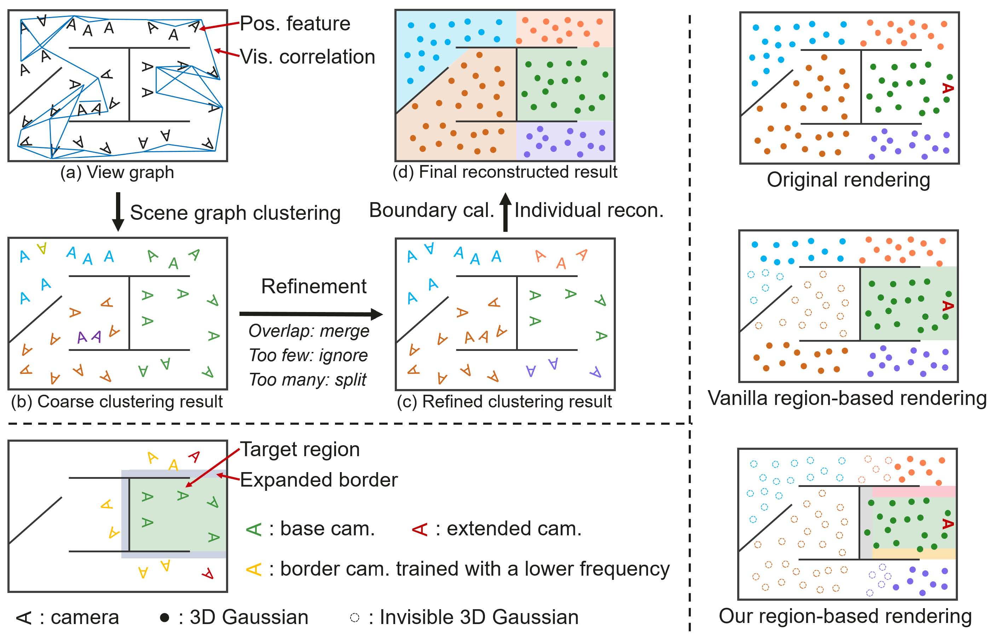
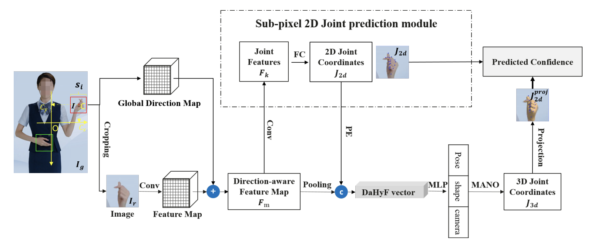
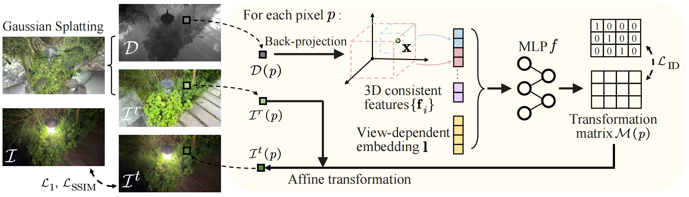
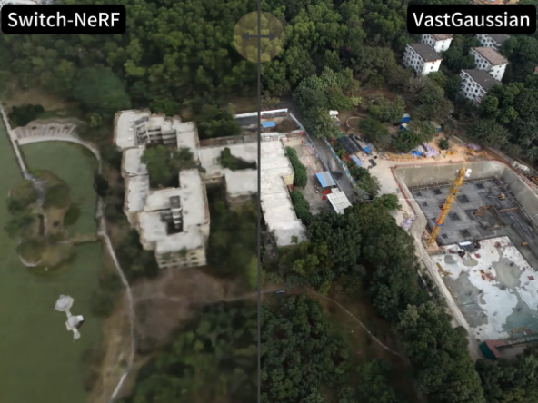

|
Shiyong Liu I'm a research scientist at Huawei Noah's Ark Lab in ShenZhen, China, where I work on a small team that mostly works on 3DGS. At Huawei I've worked on Large Scene Reconstruction, Camera Poses Estimation, Motion Capture, VR, Multi-model Recommendation & Search, Defect Detection and Machine Vision. I did my Master degree at National University of Defense Technology (NUDT). |
|
ResearchI'm interested in 3D computer vision, including camera pose estimation, motion capture and 3D reconstrucrion. Some papers are highlighted. |
|

|
OccluGaussian: Occlusion-Aware Gaussian Splatting for Large Scene Reconstruction and Rendering
Shiyong Liu, Xiao Tang, Zhihao Li, Yingfan He ChongJie Ye, Jianzhuang Liu, Binxiao Huang Shunbo Zhou Xiaofei Wu arXiv, 2025 project page / arXiv A method for accelerating and enhancing large-scale 3D scene reconstruction via occlusion-aware camera clustering and region-based Gaussian culling. |
|

|
Direction-Aware Hybrid Representation Learning for 3D Hand Pose and Shape Estimation
Shiyong Liu, Zhihao Li, Xiao Tang, Jianzhuang Liu, CVPRW, 2025, First Place in HO3Dv2/v3 leaderboards for the metric of PA-MPJPE arXiv A method for 3D hand pose/shape estimation, fusing implicit image/explicit 2D joint features with pixel direction info, reducing motion jitter via confidence-based prediction. |

|
SpecTRe-GS: Modeling Highly Specular Surfaces with Reflected Nearby Objects by Tracing Rays in 3D Gaussian Splatting
Jiajun Tang, Fan Fei, Zhihao Li, Xiao Tang, Shiyong Liu, Youyu Chen, Binxiao Huang, Dave Zhenyu Chen, Xiaofei Wu, Boxin Shi CVPR, 2025, Highlight project page / arXiv A method for enhancing 3DGS with ray tracing for specular inter-reflections, separating specular/rough surface types and optimizing geometry to improve rendering accuracy and enable scene editing. |

|
Hybrid Mesh-Gaussian Representation for Efficient Indoor Scene Reconstruction
Binxiao Huang, Zhihao Li, Shiyong Liu, Xiao Tang, Jiajun Tang, Jiaqi Lin, Yuxin Cheng, Zhenyu Chen, Xiaofei Wu, Ngai Wong IJCAI, 2025 project page / arXiv A hybrid 3DGS and textured mesh representation, where meshes handle texture-rich flat regions and Gaussians model complex geometries, optimized via joint training with a warm-up strategy and transmittance-aware supervision, achieving comparable rendering quality at higher FPS with fewer Gaussians. |
|

|
Decoupling Appearance Variations with 3D Consistent Features in Gaussian Splatting
Jiaqi Ling, Zhihao Li, Bingxiao Huang, Xiao Tang Jianzhuang Liu, Shiyong Liu, Xiaofei Wu Fenglong Song Wenming Yang AAAI, 2025 project page / arXiv A method for decoupling appearance variations in a plug-and-play and efficient manner. |
|

|
Vastgaussian: Vast 3d gaussians for large scene reconstruction
Jiaqi Ling, Zhihao Li, Jianzhuang Liu, Shiyong Liu, Yangdi Lu, Xiaofei Wu Songcen Xu Youliang Yan Wenming Yang CVPR, 2024 project page / arXiv An approach for large scene reconstruction that enabling fast optimization and high-fidelity real-time rendering. |

|
Mirrorgaussian: Reflecting 3d gaussians for reconstructing mirror reflections
Jiayue Liu, Xiao Tang, Freeman Cheng, Roy Yang, Zhihao Li, Jianzhuang Liu, Yi Huang, Jiaqi Lin, Shiyong Liu, Xiaofei Wu Songcen Xu Chun Yuan ECCV, 2024 project page / arXiv MirrorGaussian achieves high-quality and real-time rendering in scenes with mirrors, empowering scene editing like adding new mirrors and objects. |
Miscellanea |
|
Thanks for Jon Barron's website open source source code. |